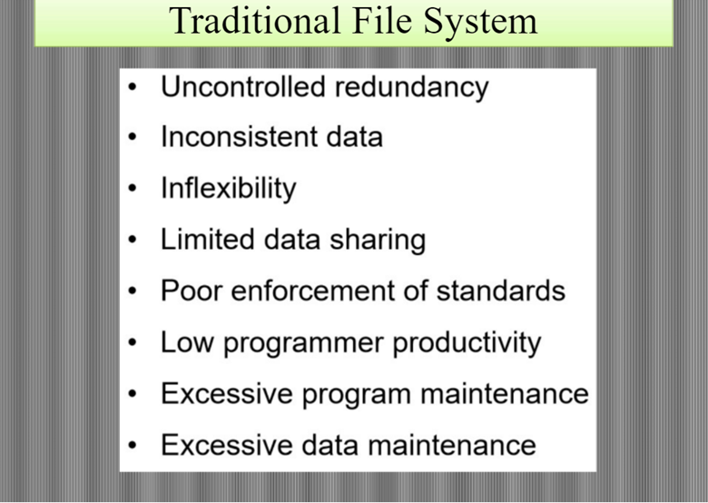

FUNDAMENTALS OF DATABASE
What is Database?
Database (DB)-is a collection of information organized in such way that a computer program can quickly select desired pieces of data. You can think of a database as an electronic filing system.
Data - It’s a facts or raw materials, and it can be a character , number or image, which are stored and processed by computer.
Information - To understand these data, they (data) need to translate or interpret to become information. Information is the meaning that is given to the data through interpreted appropriately.
- Databases (DBs) are organized by Table, fields and records, as follows:•
- Table ->is a set of rows which represent (records), and a set of columns that represent (fields), each row in the table has the same number of fields, but differ in the value, and each field in the table share the same type and size in a column.
- Field-> represents a set of data elements. The field may be the name of the student, department (dept.), stage, all these elements are fields in the table of students.
- Record ->is a group of fields in the table, although a group of fields student’s name, dept., and stage represents a one record to a student in the student table.

A Database Management System (DBMS) controls the -
1. Creation of the database
2. The storing and organization of the data in the database
3. Maintenance the database
4. Searching, data retrieval and the use of a database.
DATABASE SYSTEM
Software (S/W) - Between the physical database (DB) and the users is software. This software is referred to as the database management system (DBMS).
Users : there are three different types of database system users:
1. Database Administrator (DBA):- Who manages databases, controls the permissions, monitor the system and improve the performance of databases.
2. Database Designer:- He is designing databases to be created and built with highly efficient manner according to user requirements.
3. Database End User:- Some users have a sufficient experience to the preparation of the inquiries by query language, and the others have no experience therefore a special programs are created for them (Wizard for example).
DATABASE ABSTRACTION
The major purpose of a database system is to provide users with an abstract view of the data. That is, the system hides certain details of how the data are stored and maintained.
-
Internal level
(also known as the storage level or Physical level) : the lowest level of abstraction, describe how the data are actually stored.
-
Conceptual level
(also known as a Logical level): This level describe what data are stored in the database and what relationship exist among those data. The logical level is used by the database administrator, who must decide what information is to be kept in the database.
-
External level
(also known as the user level or View level):is the one closet to the users. It is concerned with the way the data is seen by users.
DATABASE vs. TRADITIONAL FILE

Schema
What Is Relational Schema?
The relational schema is the primary element of the relational database.
These databases are managed using language and structure that is consistent with first-order logic.
This allows for database management based on entity relationships, making them easy to organize according to volume.
Relational schema refers to the meta-data that describes the structure of data within a certain domain. It is the blueprint of a database that outlines the way its structure organizes data into tables.
Converting Strong Entity Types To Relational Schema
For Example, if your database contains employee records for a large enterprise, then you might have entity relationships describing each employee as a strong entity like so:
- Employee Name
- ID Number
- Address
- Employee Skillset
- Hiring Date
-
Years of Service
In this example, you would have two attributes of relational schema data. First, you would have the Employee attribute, which is the primary key of the table (since everything is related to the employee) and an Address attribute, which is a composite attribute made up of different elements. The Address attribute would consist of the following values:
- City
- Street
- Address number
-
Zip code
Knowing this, you are ready to map an entity relationship diagram to relational schema. It would like to look like this:
-
Employee
(Name, ID Number, Address Number, Street, City, Zip Code, Hiring Date)
-
Employee Skillset
(ID Number, Skillset) You should notice that Years of Service is excluded from this list. That’s because it is a derived attribute that can be calculated by subtracting the Hiring Date from the current date. The reason Employee Skillset has its own schema is because it is a multi-valued attribute. For relational schema, every entity type becomes its own table, and every single-valued attribute is a column within that table. Derived attributes can safely be ignored, while multi-valued attributes become separate tables.
Converting Weak Entity Types
Converting Weak Entity Types To Relational Schema
The method for converting weak entity types to the relational schema is similar to the process described above, except that weak entity types become tables of their own and the primary key of the strong entity acts as a foreign key in the table.
This means that for the strong entity Employee, you would create a composite primary key comprised of the foreign key Dependent and the key of the weak entity itself. That would make the schema look like this:
- Employee (Name, ID Number, Address Number, Street, City, Zip Code, Hiring Date)
- Dependent (Employee, Dependent ID, Name, Address) The correlation here is between the ID Number in the Employee table and the Employee element of the Dependent table. With this work done, you are ready to begin converting relationships. Doing so requires understanding the cardinality and degree of each relationship.
- There are three possible cardinalities – 1:1, 1:M, 1:N
- There are three possible degrees – unary, binary, and ternary.
Examples Of Relational Degrees And Cardinalities
Binary 1:1
Taking the above example further, Employee could be combined with a new Department table to form a binary 1:1 relationship. If the employee manages a specific department, then he or she can be described as a partial participant, while the department would be described as a total participant. The relational schema would look like this:
- Employee (Name, ID Number, Address Number, Street, City, Zip Code, Hiring Date)
- Department (Manager ID Number, Department ID, Name, Address) In this case, the partial participant’s primary key becomes the total participant’s foreign key. The manager’s ID Number correlates to the appropriate employee’s ID Number. This showcases an important part of creating the relational schema. The primary key of either participant in a binary 1:1 relationship can become a foreign key in the other. Another way of describing the relationship above would be using Manages as the foreign key under Employee, correlating to the primary key Department ID under Department.
Examples Of Relational Degrees And Cardinalities
Binary 1:N
An example of a Binary 1:N relationship would be that between a Teacher teaching a Subject. In a particular classroom, teachers can teach more than one Subject to a variety of students, yet all Subjects share the same relationship with the teacher.
- In the binary 1:1 relationship above, every department had a unique manager. With this binary 1:N relationship, a variable number of students can share the same teacher. The primary key of Teacher would be the Teacher ID, which would correlate to the foreign key of Subject, under Teacher.
Examples Of Relational Degrees And Cardinalities
Binary M:N
To describe a Binary M:N relationship, imagine a student enrolling in a course. Create a new table describing Student and another describing Course. Both of these tables are related through the act of enrolling, and both of them feature foreign keys.
- The foreign key for Student is the Student ID.
- The foreign key for Course is the Course ID. The primary key of the new table is the combination of each entity’s foreign keys. You would describe it as (Student ID, Course ID). This is a unique binary M:N relational schema that links individual students to courses. This works because IDs are, by their nature, created for the purpose of being foreign keys in relational databases.
Self-Referencing Schema
What About Self-Referencing Schema?
You can use a relational schema to describe self-referencing relationships. For instance, two employees who are married to one another could feature the Spouse foreign key. For both of these employee’s foreign keys, the reference will be to the other employee’s Employee ID, which is the primary key of each employee’s respective table.
This also works in relationship schema with a 1:N cardinality. The primary key field itself would become the foreign key of the same table in this case. This is the same as a unary 1:1 schema.
For example, an Employee who is the manager of a Subordinate may have manager as his or her foreign key. In this case, the Employee ID would be the primary key in the same table. Self-referencing an M:N relationship requires two tables. One must represent the entity in question and the other must represent the M:N relationship.
Imagine an employee who is responsible for guaranteeing the quality of a certain product or service. This relationship would have to include both the Guarantor and Beneficiary as foreign keys that combine to correlate with the Employee ID of the Employee table. Both Guarantor and Beneficiary would act as primary and foreign keys within the newly created relational schema table.
Ternary Tables
Ternary Tables Explained
While binary and unary relationships are simple to describe using the relational schema with one or two tables. Ternary tables require a third, new table.
The primary key of this new table consists of every participating entity’s foreign key, added together. This means that the new table must contain three foreign keys to correlate to.
For instance, the relationship between a doctor and her patient actually consists of three entities: The Doctor, the Patient, and the Medicine. To properly describe this relationship as a relational schema, you must assign foreign keys to each of these entities and correlate them to a new table entitled Prescription.
This is a simple way of visualizing the way a ternary table works. The primary key of the newly created Prescription table is (Doctor ID, Patient ID, Drug ID). Any schema that doesn’t include these three important pieces of data is missing an important part of the puzzle.
This approach would allow a database manager to create an organized archive of prescriptions that accounts for specific drug types, immediately correlated to the names of patients who are using them and offer the names of the doctors who prescribed them.
For the sake of completeness, you may wish to add the expiration date to the Medicine table so that this data is available within the main matrix. You may add Next Appointment or Refill Date to the Prescription table. You would logically want to add Date of Birth, Address, and other important relational data to the Patient table.
All of these tools combine to make the creation of relationship-oriented databases possible in MySQL. You can practice making your own MySQL databases online with any browser using SQLDBM.
Tags
Tags:
relationship diagram
Converting Strong Entity Types to Relational Schema
Converting Weak Entity Types to Relational Schema
Binary 1:1
Binary 1:N
Self-referencing schema
MySQL